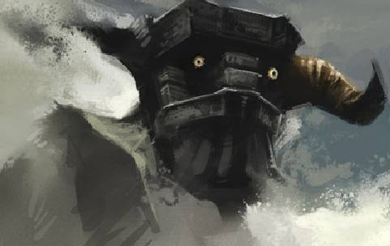
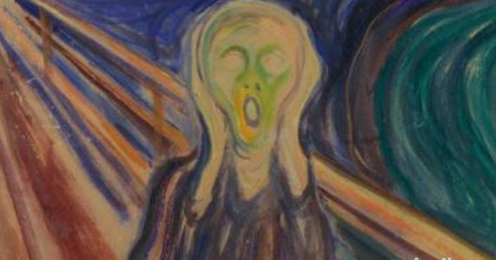
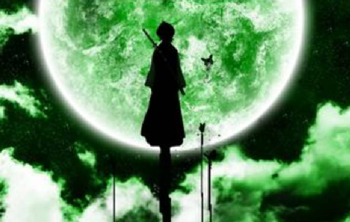

Time: 19:30-21:30, Friday,June 2.
Venue: Room B208, New Main Building, Beihang University.
Table topic part-Jack & Rose
Toastmaster gastby
Table Topic Master Deron
No matter you mistake him for gastby or deron, neither will i mind,but he is jack,the only jack.what do you think of jack,he is a hansome boy with romantic story of his past,he is just a guy with nothing,then how will you judge his devotion to rose? what about rose? suppose you are rose,would you choose to stay with jack till he die?
It's a complicated question, please come to our meeting and image you are someone you aren't, to find the answer and get close to the truth(maybe there is no truth but it doesn't matter),our table topic master deron has prepared some dishes,come and enjoy it.
Prepared speech part (CC)
Welcome to the world of E-sports (CC-1)
speaker：Rocky

Sorry? what is E-sports? after i listen to rocky's explanation, i did realize there exit this kind of sports, although i didn't like it so much but i believe that everyone all know it,i am just so curious to know why it got such a odd name, if you are too, you should come to our meeting and know more about this E-sports.
Fear to do my CC-2 (CC-2)
speaker：Eric

Everyone who have this opportunity to deliver a speech in the stage of toastmaster will have this feeling of fear,and i am sure you can work well with it,so how can you get rid of your fear to do your cc2 speech,Eric? maybe you will make another great example to our toastmaster club i believe.
Nothing is impossible to a willing mind (CC-4)
speaker：Sarah
If my memory serves me right,Sarah just gave her CC3 speech not long ago,and now she will give us her CC4 speech,as far as i know sarah who has already devoted to her career always share her experience about life or the work,just like this title, nothing is impossible,then what is possible? I can't wait to listen to sarah's powerful speech.
Mystery guest！！！！！！
speech name:???
speaker:???

one of our club old member which doesn't mean she is at that age but senior enough to be one will go back to our toastmaster to give the CC10 speech and share his story with us, don't you wanna know who she is and what the story he will tell to us?
What is Toastmasters?
Toastmasters International (TI) is a nonprofit educational organization that operates clubs worldwide for thepurpose of helping members improve their communication, public speaking, andleadership skills.
You can find us by the following map of Beihang University.
Any questions call Bowen:17801098588

https://mp.weixin.qq.com/s/sT0vPiZxSpXGjcYBOEojJw
本页为抢救式本地归档，图文已永久保存。